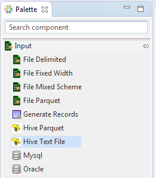

Input Hive Text File
Input Hive Text File as the name suggests accepts a Hive table stored as text file as input source. It is present under the Input category in the component palette.
This component is used in jobs which read Hive table file as input. Component properties accepts hive database name, table name and partition key names on which the table is partitioned. It has a single output port.
The Input Hive Text File component can be easily distinguished in the component palette.

An enlarged version of the same is depicted when dragged on the canvas.
For further reference click on the links below: